About
CoRAL, short for Control, Robotics, Autonomy and Learning, is a workshop for researchers working where control theory meets robotics and machine learning. Control theory provides guarantees of stability and safety; robotics and learning turn those guarantees into machines that perceive, plan and act in the real world. CoRAL brings these communities together to share recent work, and gives research students a platform to present theirs.
The workshop is hosted by the Department of Cyber-Physical Systems at the Indian Institute of Science, Bengaluru, with a steering committee of faculty from IITs and other institutes across India. Attendance is by invitation only, as seating at the venue is limited. There is no fee for invited participants.
Speakers
Invited talks on the first two days; each runs 45 minutes, including Q&A.
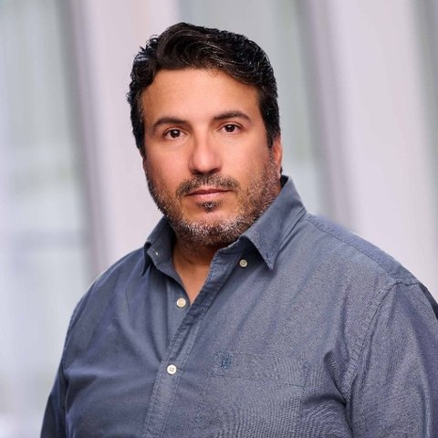
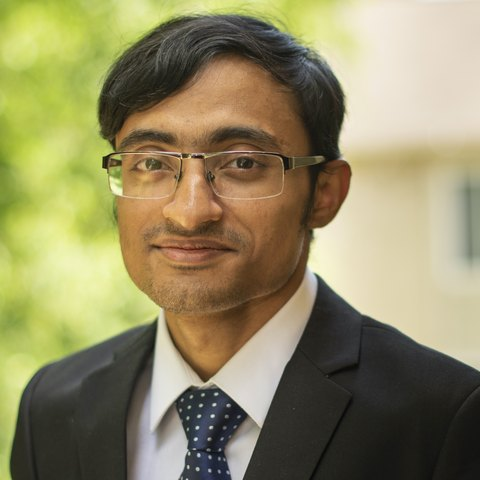
Prof. Debdipta Goswami
Dept. of Mechanical and Aerospace Engineering
The Ohio State University
“K-PWM: Control-Oriented Structured World Models under Partial Observation”
Day 1, 14:00
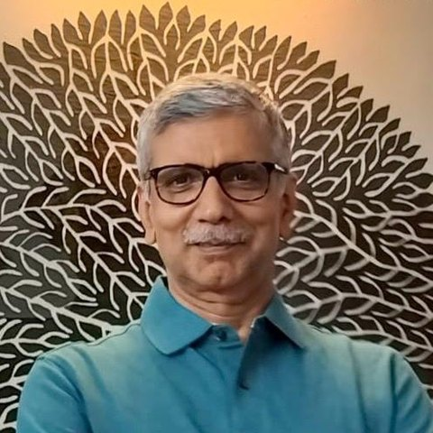
Prof. Ravi N. Banavar
Centre for Systems and Control
IIT Bombay
“Data-driven Control: Subspace Uncertainty and Optimization over a Grassmannian Manifold”
Day 2, 09:30
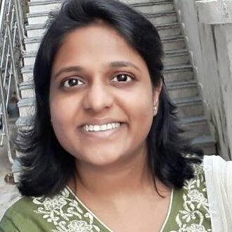
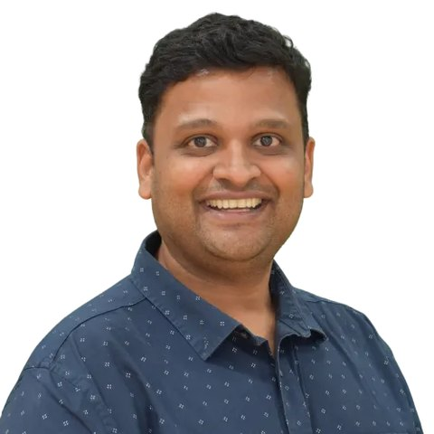
Prof. Sandeep Manjanna
Robotics and Autonomous Systems
Plaksha University
“FLUID: Flow-aware Learning for Intelligent Navigation in Dynamic Fluids”
Day 2, 17:00
Schedule
The first two days bring together invited talks and presentations by nominated students, with a poster session on Day 1. The third day is a morning of talks followed by a visit to the CPS labs. Invited talks are 45 minutes, including Q&A. All times IST.
Venue: G-22 Seminar Hall, TCS Smart X Hub, Indian Institute of Science. Breakfast, lunch and tea are served in the ground floor lunch area of the same building. Location on Google Maps.
Day 1: Thursday, 3 December
Day 2: Friday, 4 December
Day 3: Saturday, 5 December
How to reach IISc
The workshop is held in the TCS Smart X Hub building on the IISc campus. IISc is known locally as the “Tata Institute”; asking a taxi or auto driver for the Tata Institute is usually enough. Workshop location on Google Maps.
From Kempegowda International Airport
If the driver does not know the Tata Institute: from Mekhri Circle, take CV Raman Road towards Yeshwanthpur. Keep straight at the first traffic signal (Sadashiva Nagar Police Station); the IISc gates are about 500 m further on the right.
Taxi. Metered taxis queue on your left as you exit the terminal. The fare to IISc is approximately Rs. 850 (possibly 10% extra at night), and a toll of Rs. 120 is charged on the highway into the city. Payment may be in cash, so carry enough Indian Rupees. App-based cabs (Ola, Uber, Meru) are also available.
Bus. BMTC shuttle buses run from the airport to the city every 15 minutes. Most stop at Mekhri Circle, about 2 km from IISc; take an autorickshaw to the Tata Institute from there. Airport information: bengaluruairport.com.
If you are staying at the IISc Main Guest House, the Centenary Visitors’ House, Jawahar Guest House or Hoysala House, please ask for directions at the IISc gate.
From the City Railway Station or Majestic
The City Railway Station and Majestic (Kempegowda Bus Station), opposite each other, are about 7 km from IISc. From the railway station, exit from platform 1 to the prepaid taxi stand; a city taxi costs about Rs. 150.
By bus from Majestic, go to platform 22, from where almost all buses come to the Institute, heading past Malleswaram 18th Cross towards Yeshwanthpur. The closest stop to the venue is Malleswaram 18th Cross. Buses also stop on the highway near the yellow overbridge before Yeshwanthpur Circle, and at Yeshwanthpur tollgate, just off campus near R Block.
From Yeshwanthpur Railway Station
Yeshwanthpur station is less than 2 km from campus. Take a prepaid auto from the counter outside the exit of platform 6; enter IISc at Prof. CNR Rao Circle. Most departments and hostels are within 500 m of the gate, so you can ask the auto to drop you at your destination.
Food on campus
- Nesara08:00 to 22:00
- Sarvam08:00 to 17:00
- Kabini Canteen06:30 to 22:00
- One More Coffee (ECE Dept.)08:00 to 20:00
- One More Coffee (fifth floor, TCS Smart X Hub)08:00 to 17:00
- Nandini Milk Parlour & Chef Talk bakery (first floor, Janata Bazar shopping complex)07:00 to 20:00
Committees
Steering committee
Prof. Ravi N. Banavar
IIT Bombay
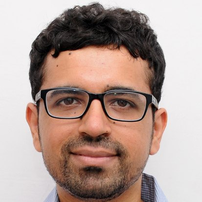
Prof. Shubhendu Bhasin
IIT Delhi
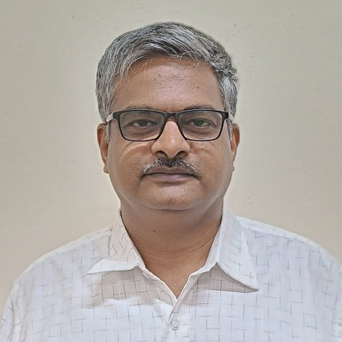
Prof. Arun D. Mahindrakar
IIT Madras
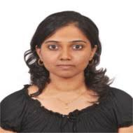
Prof. Rachel Kalpana Kalaimani
IIT Madras
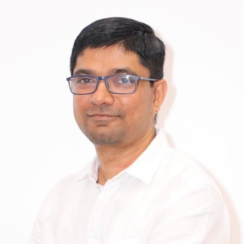
Prof. Ramkrishna Pasumarthy
IIT Madras
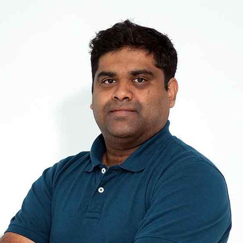
Prof. Soumya Ranjan Sahoo
IIT Kanpur
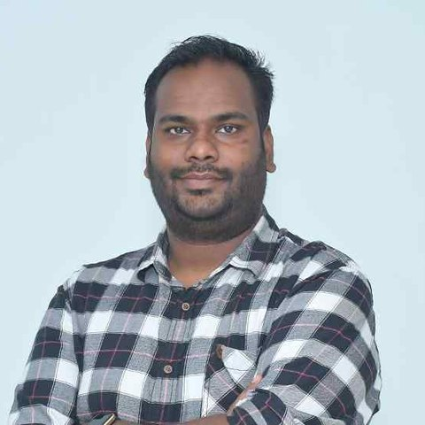
Prof. Abhilash Patel
IIT Kanpur
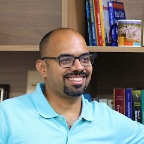
Prof. Harish P. M.
IIT Gandhinagar
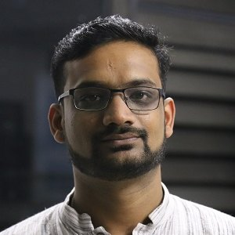
Prof. Madhu Vadali
IIT Gandhinagar
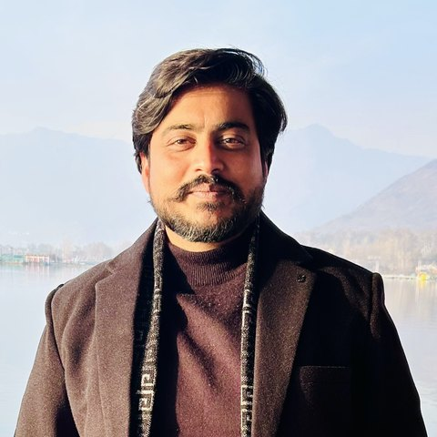
Prof. Tushar Jain
IIT Mandi
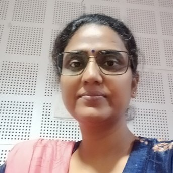
Prof. Padmini Singh
IIT Jammu
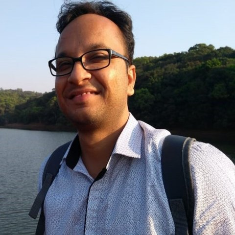
Prof. Jayaram Valluru
IIT Ropar
Prof. Sandeep Manjanna
Plaksha University
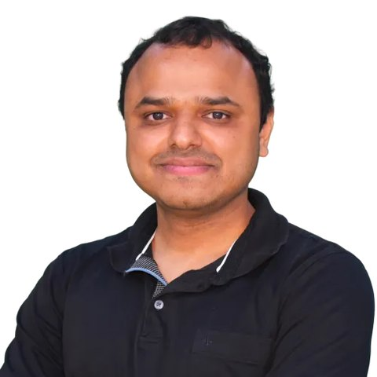
Prof. Deepan Muthirayan
Plaksha University
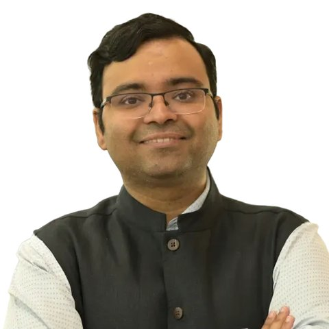
Prof. Shashank Tamaskar
Plaksha University
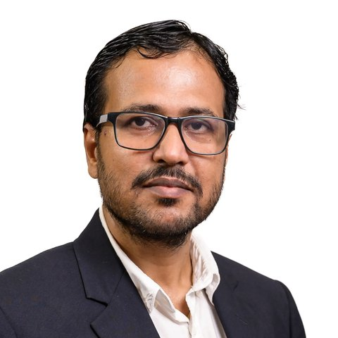
Prof. Santosh Kumar Choudhary
Manipal Academy of Higher Education
Organizing committee
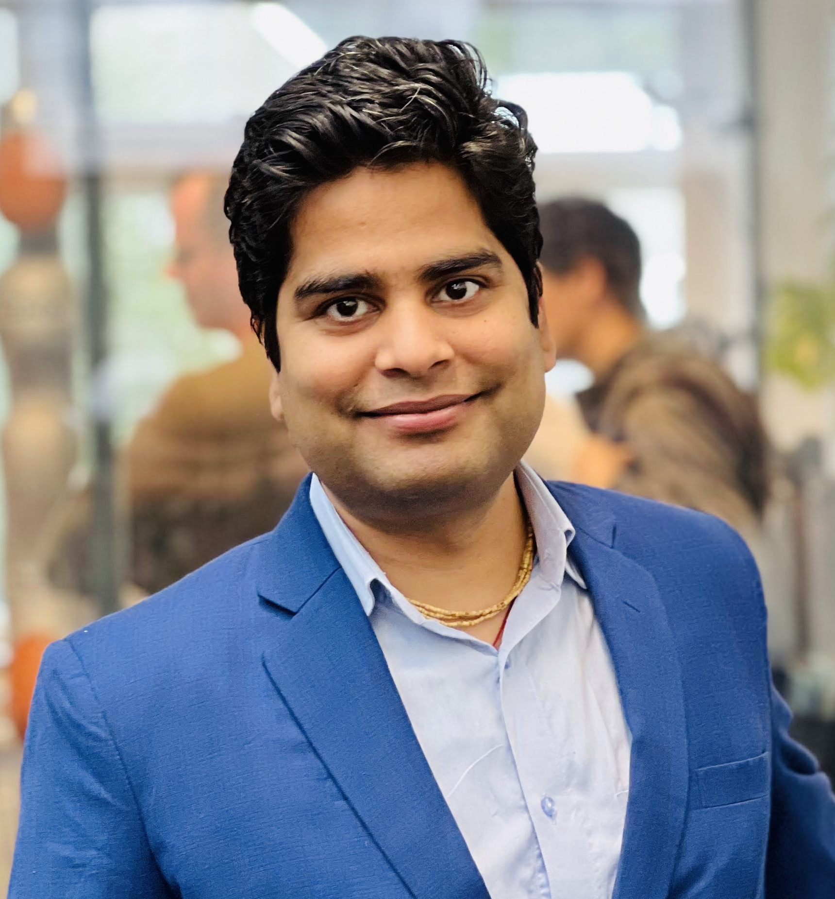
Prof. Ravi Prakash
Dept. of Cyber-Physical Systems
Indian Institute of Science
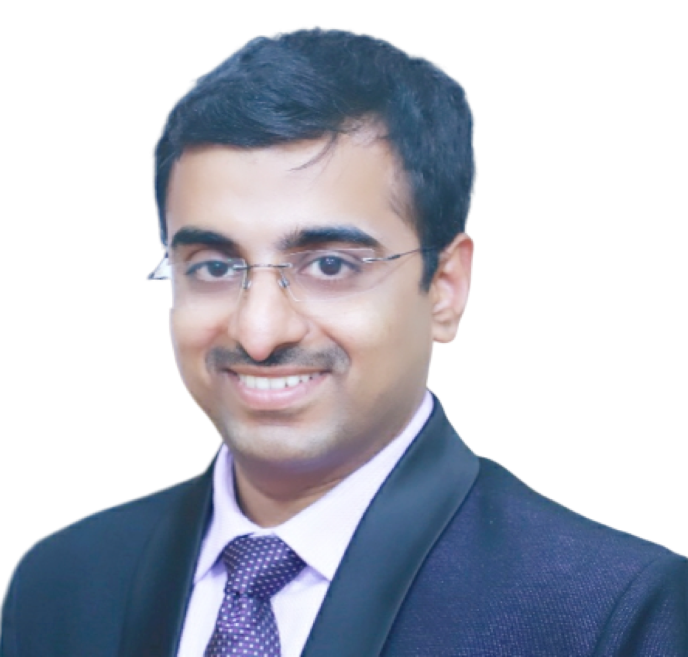
Prof. Pushpak Jagtap
Dept. of Cyber-Physical Systems
Indian Institute of Science
Volunteers
Sponsors
CoRAL 2026 is made possible by the support of the organizations below.
Diamond sponsor
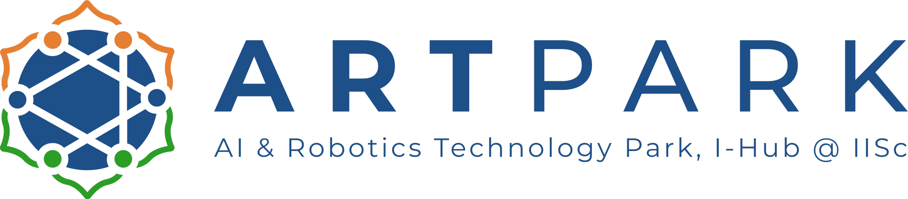
Platinum sponsor
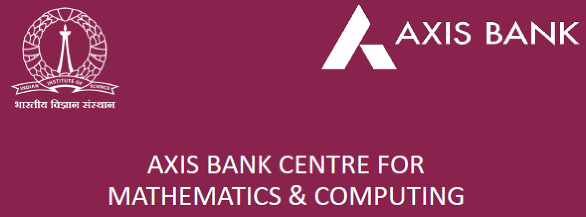
Gold sponsor
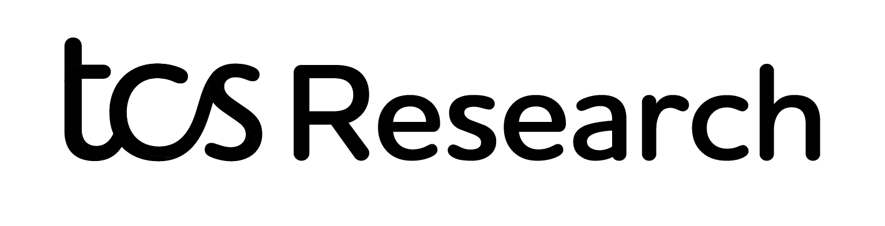
Participating institutes
CoRAL 2026 is hosted by the Department of Cyber-Physical Systems at the Indian Institute of Science, with researchers from the following institutes taking part.
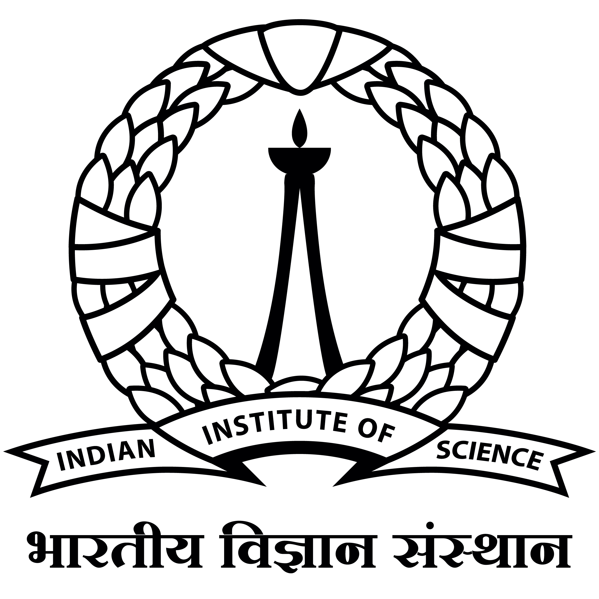
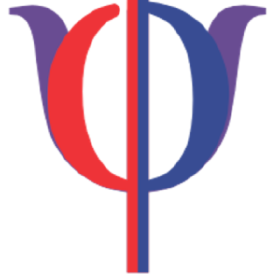
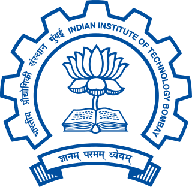
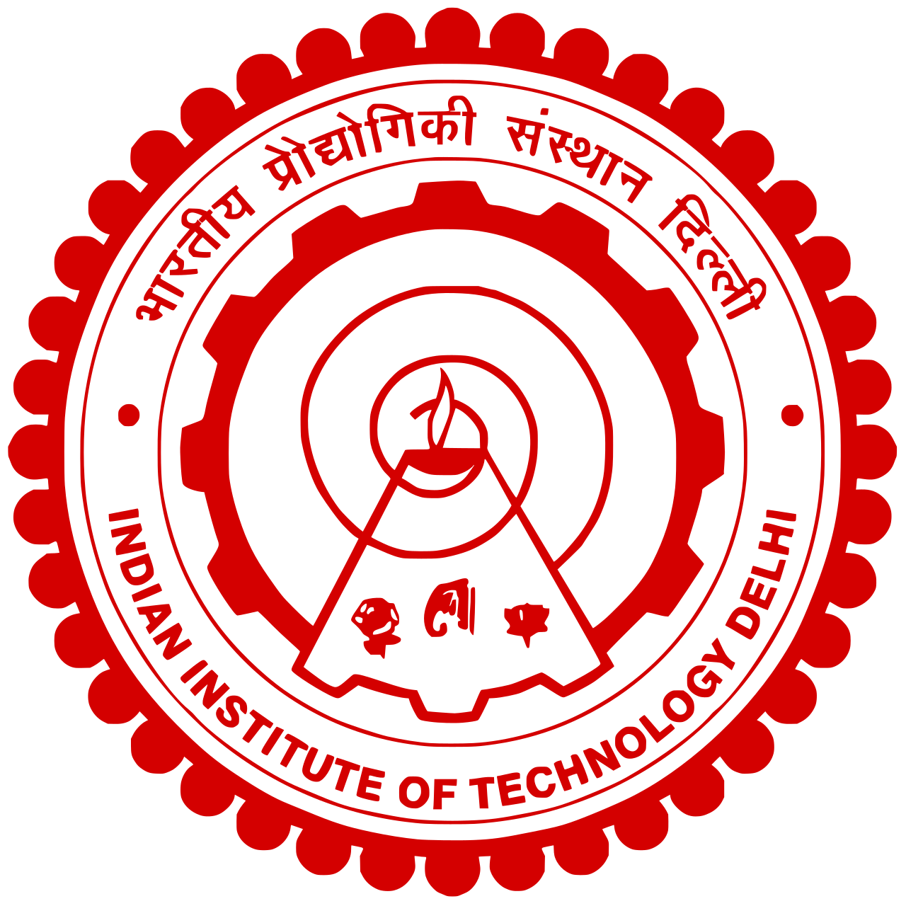
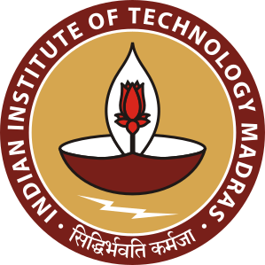

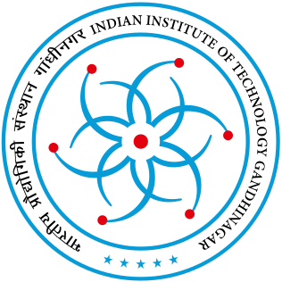
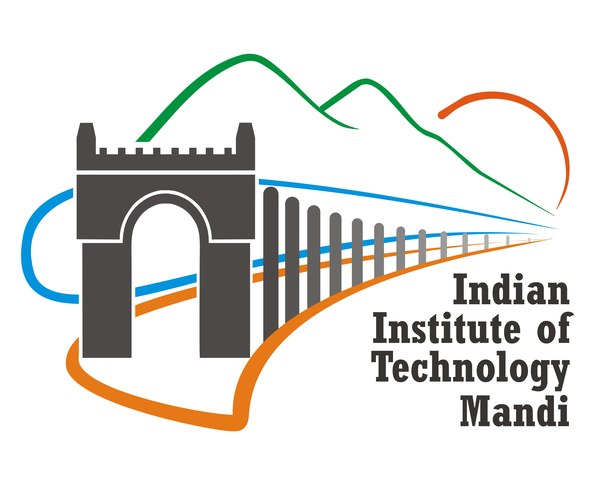
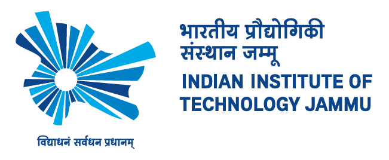
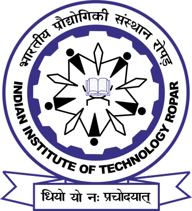